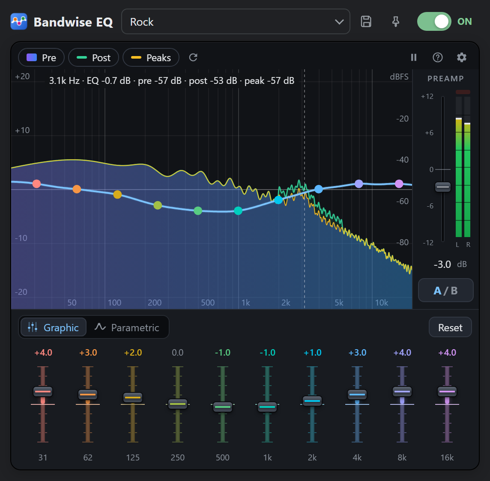
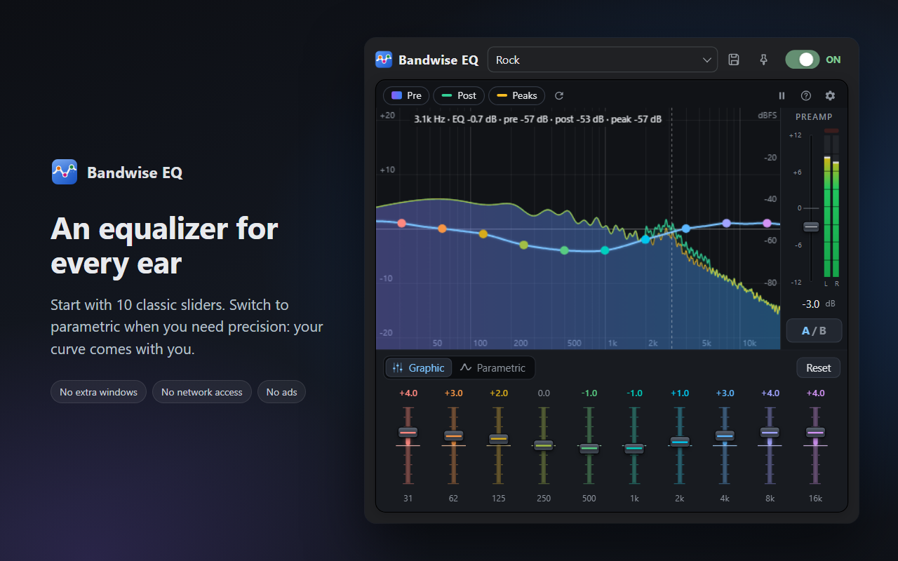
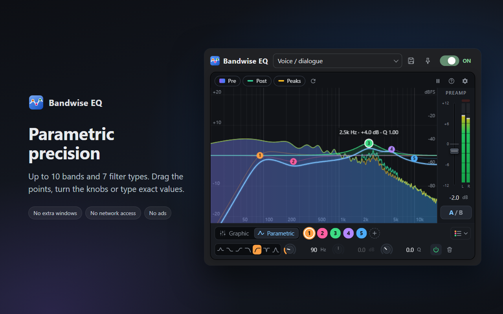
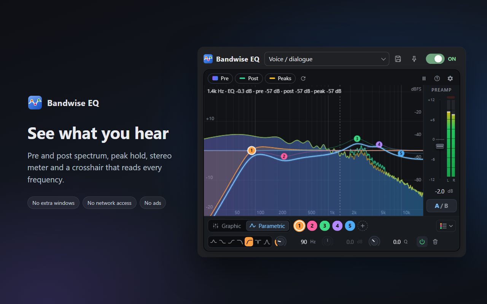
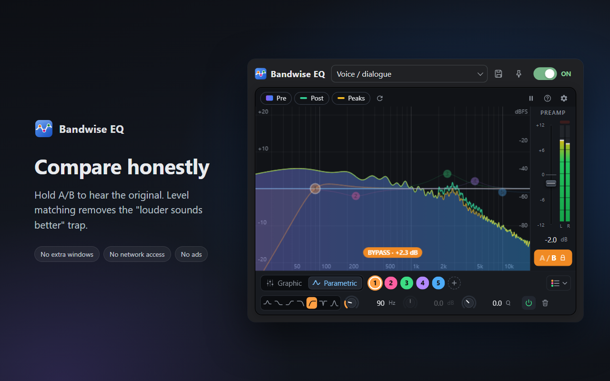
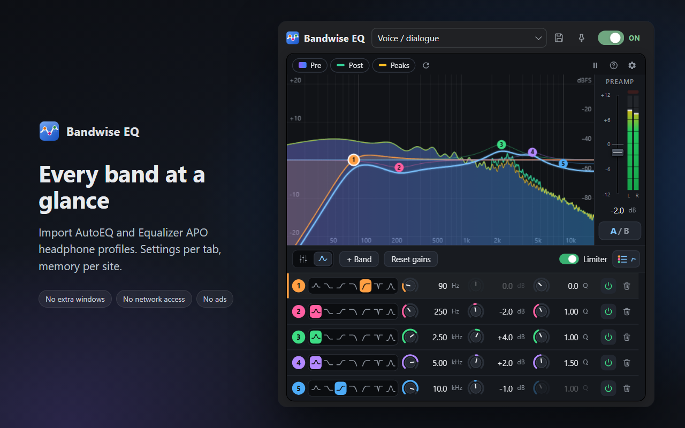

An equalizer for every ear
Adjust the sound of any Chrome tab. It's easy if you just want to move a few sliders, and precise if you know exactly what you're after.

What it does
Two ways to adjust the sound
Graphic mode has 10 classic sliders. Parametric mode gives you up to 10 free bands with 7 filter types. Both edit the same EQ, so you can start simple and switch when you need more control.
See what you are changing
A real-time spectrum analyzer shows the sound before and after the EQ. Hover over the graph to read the frequency, the EQ gain and the levels at that point.
A fair before and after comparison
Hold A/B to hear the original sound. Louder always seems better, so Bandwise matches the volume of the two versions and you compare the tone, not the loudness.
Headphone correction
Import headphone profiles from AutoEQ or any Equalizer APO parametric file, and export your own settings in the same format.
It remembers your settings
Save your own presets, keep separate settings for each tab, and pin a site so it gets its settings back every time you open it.
Private by design
The audio is processed on your computer and never leaves it. Bandwise EQ doesn't read the pages you visit and has no network access, no analytics and no ads.
A closer look





How to use
- Play something in a tab: a video, a song, a podcast.
- Click the Bandwise EQ icon and turn it on.
- Adjust the sound. You can close the popup whenever you like.